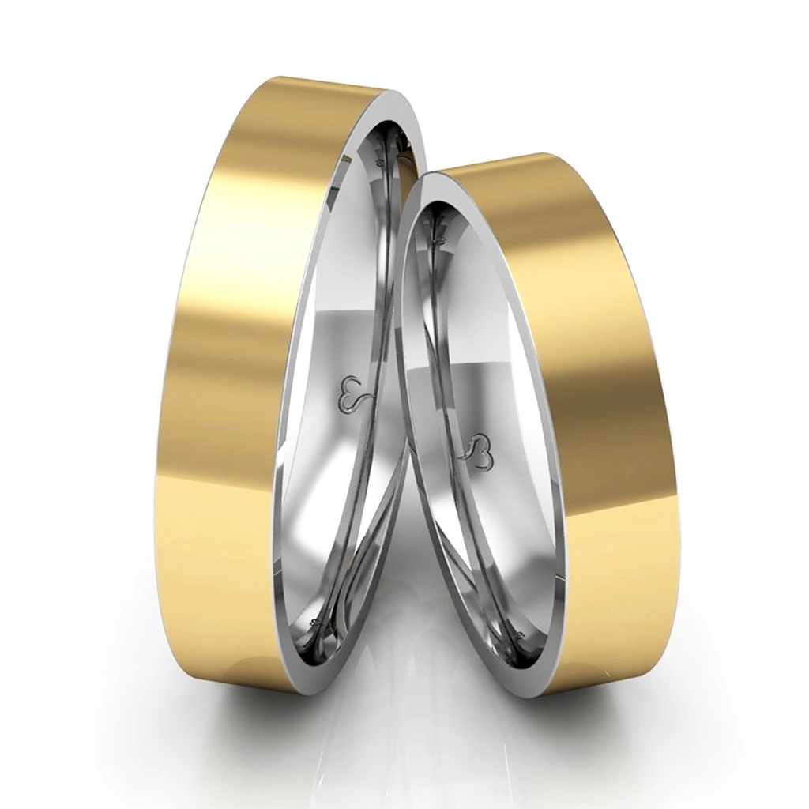

Engagements

Engagement rings are an important part of the wedding tradition. It
symbolizes the emotional connection between partners that are about
to be married. These rings are often made of precious metals and
decorated with jewels to make them even more special. They come in a
variety of designs and styles, so it is important to make sure you
get the right one for you and your partner. Finding the perfect
engagement ring is an important step that sets the tone for the
wedding and the marriage to come.
check all available options
Weddings
The beauty of choosing the perfect wedding jewelry cannot be
overstated. A beautiful set of wedding jewelry can add elegance and
sophistication to any bridal look. Whether you’re opting for
traditional precious stones or something more modern, there are
countless options to choose from. From spectacular statement
earrings to delicate bracelets, finding the right pieces of wedding
jewelry is sure to make any bride feel even more radiant on the big
day! Visit the link below and take advantage of the opportunity.
check all available options
Birthdays
Jewelry makes the perfect gift for any birthday! Whether it's a
classic piece of jewelry such as a ring or necklace - or something
more unique, such as a bracelet or anklet - a beautiful piece of
jewelry is sure to bring a smile to the recipient's face. Jewels
also make great keepsakes, so you can be sure your loved one will
keep their special piece forever. Whether you're shopping for
yourself or someone else, make sure to find the perfect birthday
jewelry to celebrate the occasion in style.
- Mond - Fri : 9am - 22pm
- Sat : 9am - 20pm
- Sun : Close